Un modelo de formación compartida entre el CIFP Salud Jerez y la Base 061 EPES Jerez para formar a los técnicos en emergencias sanitarias del futuro.
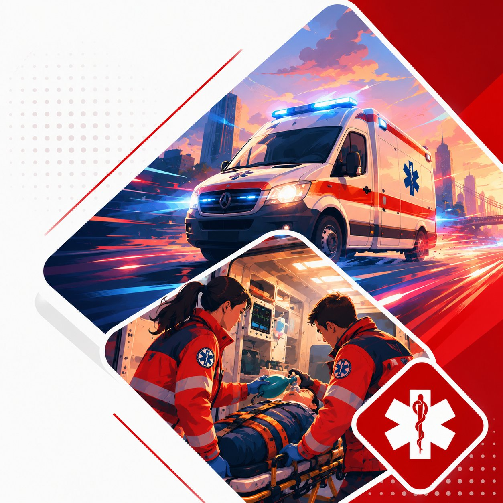
El CIFP Salud Jerez se ubica en Jerez de la Frontera (Cádiz), quinta ciudad de Andalucía. La alta siniestralidad vial, el sector industrial y la red sanitaria provincial generan demanda sostenida de técnicos prehospitalarios. La FP es vía clave de empleabilidad en una ciudad con tasa de paro históricamente superior al 25%.
| Nivel | Ciclo formativo | Horas | Alumnos |
|---|---|---|---|
| GM | Técnico/a en Cuidados Auxiliares de Enfermería (TCAE) | 2.000h | 28 |
| GM | Técnico/a en Emergencias Sanitarias (TES) | 2.000h | 26 |
| GS | T.S. en Laboratorio Clínico y Biomédico | 2.000h | 25 |
| GS | T.S. en Imagen para el Diagnóstico y Medicina Nuclear | 2.000h | 24 |
| GS | T.S. en Anatomía Patológica y Citodiagnóstico | 2.000h | 22 |
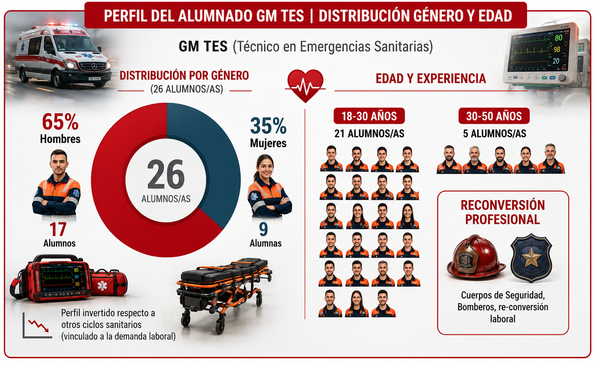
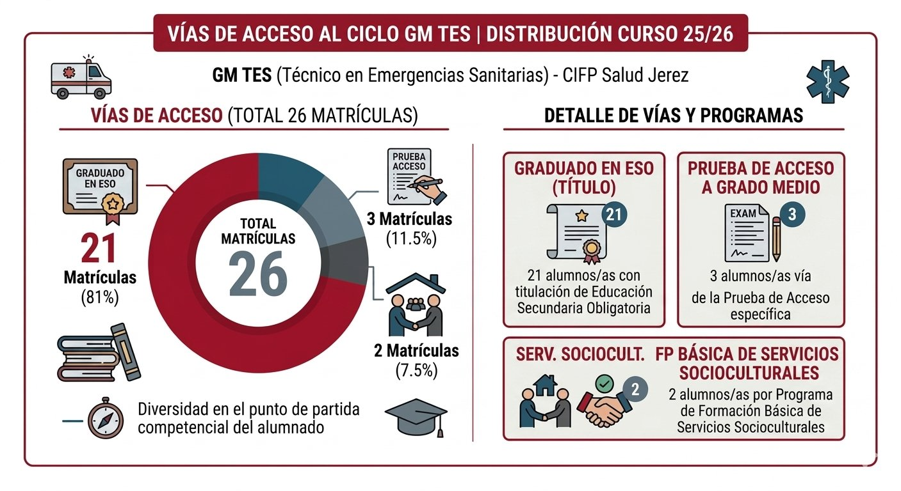
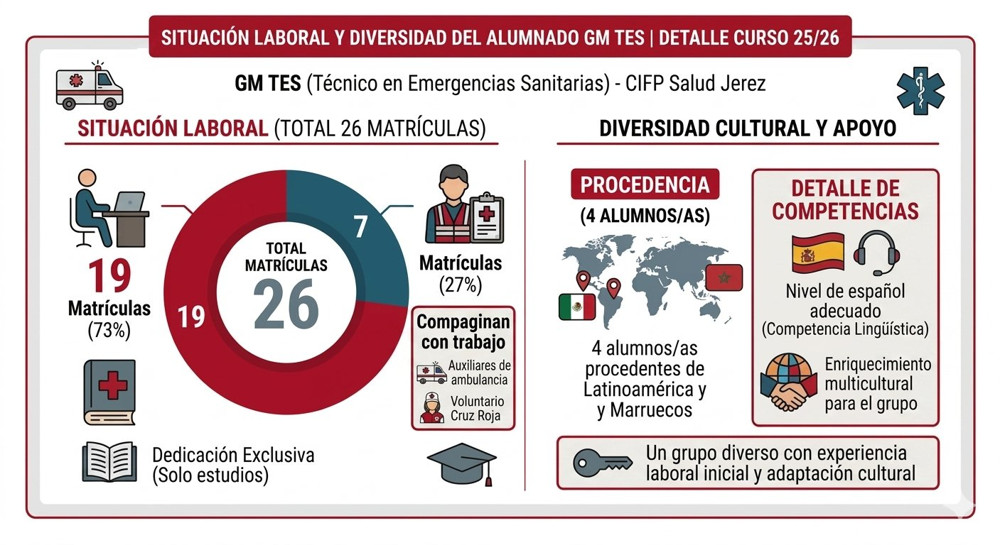
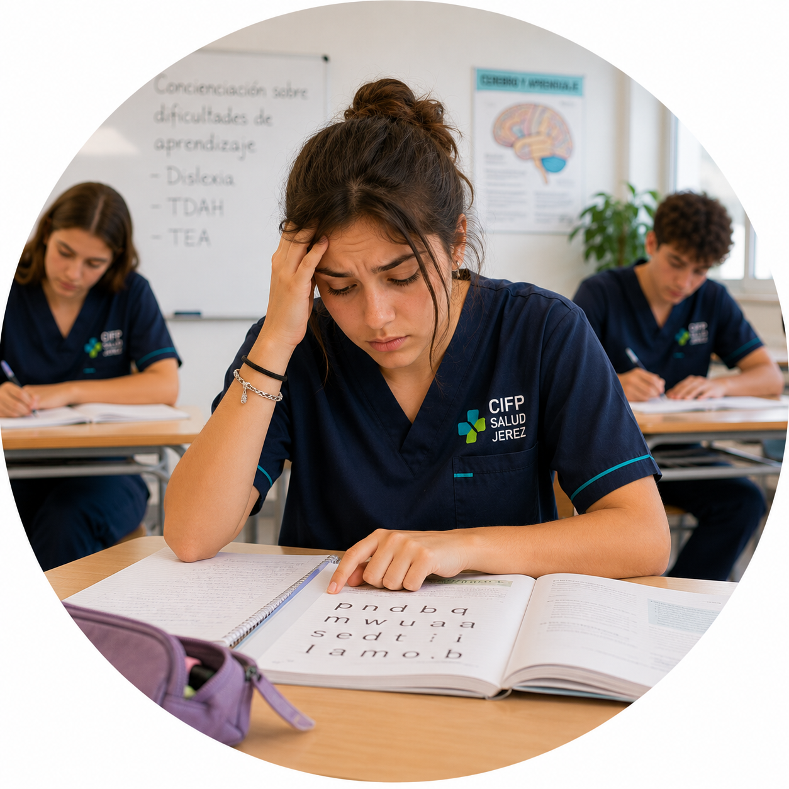
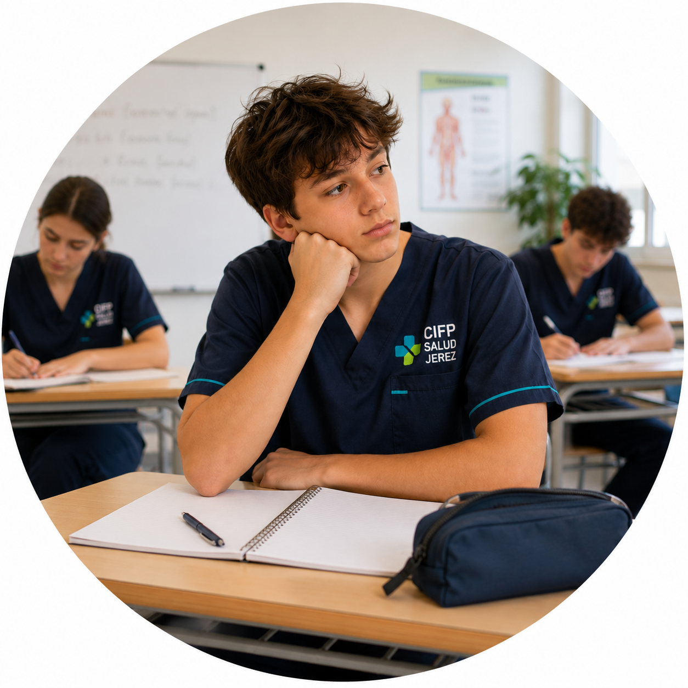
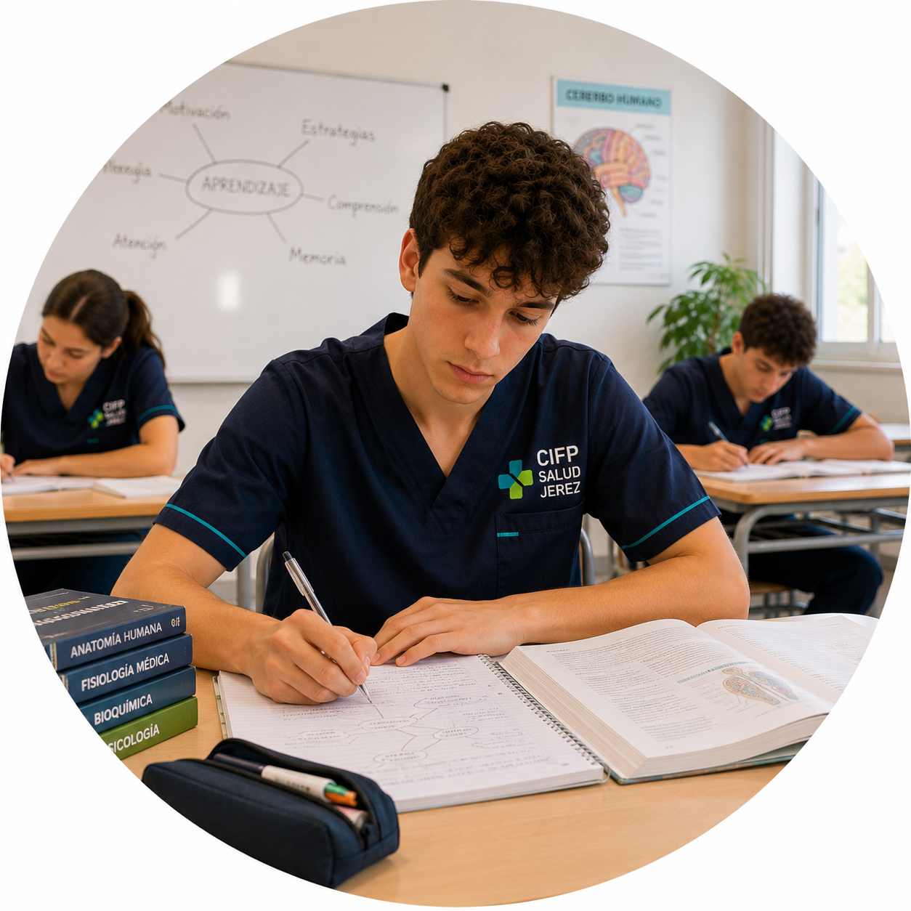
| RA | Denominación | Contenidos | Bloom | Estado |
|---|---|---|---|---|
| RA1 | Soporte vital avanzado | Material emergencias, vía aérea, hemostasia, ECG, SVA pediátrico | N3 N4 | Actualizado |
| RA2 | Medicación de emergencia | Vías administración, cálculo dosis, farmacología emergencias | N3 N4 | Actualizado |
| RA3 | Traumatismos y agentes físicos | Biomecánica trauma, vendajes, lesiones físicas, radiaciones ionizantes | N3 N4 | Actualiz. CE 3d |
| RA4 | Agentes químicos y biológicos | Agentes QBN, descontaminación, bioseguridad, EPIs nivel alto | N3 N4 | Actualiz. CE 4b |
| RA5 | Patología orgánica urgente | Cardiovascular (SCA, shock), respiratoria (EPOC, asma), neurológica (ACV) | N3 N4 | Actualizado |
| RA6 | Parto inminente | Fases del parto, maniobras soporte, resucitación neonatal | N2 N3 | Desactualiz. |
Principal nodo operativo de emergencias sanitarias prehospitalarias de Cádiz. Opera con ambulancias SVA/SVB en actividad continua y dispone de vehículos de intervención especial NRBQ en coordinación con Protección Civil y Guardia Civil.
| Equipo / Sistema | Descripción técnica | CE módulo 0056 |
|---|---|---|
| Monitor-desfibrilador SVA | Bifásico, ECG 12 deriv., capnografía EtCO₂, pulsioximetría, marcapasos externo | CE 1b, CE 1c, CE 5a |
| Telemedicina prehospitalaria (HELIOX®) | Transmisión tiempo real ECG, constantes y vídeo al hospital receptor | CE 5a, CE 1b |
| Sistema SIGEA + ePCR | Geolocalización GPS, parte asistencial electrónico, triage START/SALT digital | Todos los RA |
| Trajes NBQ nivel B/C | Gore-Tex multicapa, compatible con SCBA (equipo autónomo respiración) | CE 4b |
| Dosímetro electrónico Mirion DMC 3000 | Dosis gamma/beta, alarma sonora/visual, registro digital | CE 3d |
| Unidad descontaminación portátil | Duchas plegables, solución descontaminante, bolsas residuos clase III | CE 4b, CE 3d |
| Comunicaciones TETRA cifradas | Red TETRA Junta de Andalucía, cifrado extremo a extremo | CE 3d, CE 4b |
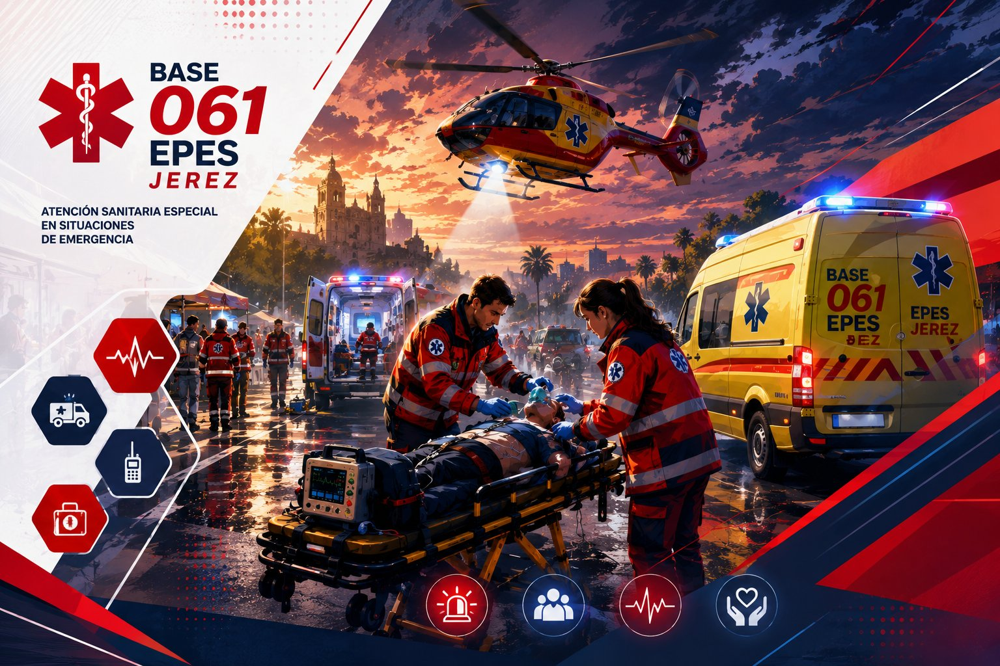
Figura clave del modelo dual. Actúa como enlace entre el entorno profesional real y el proceso de aprendizaje del alumnado.
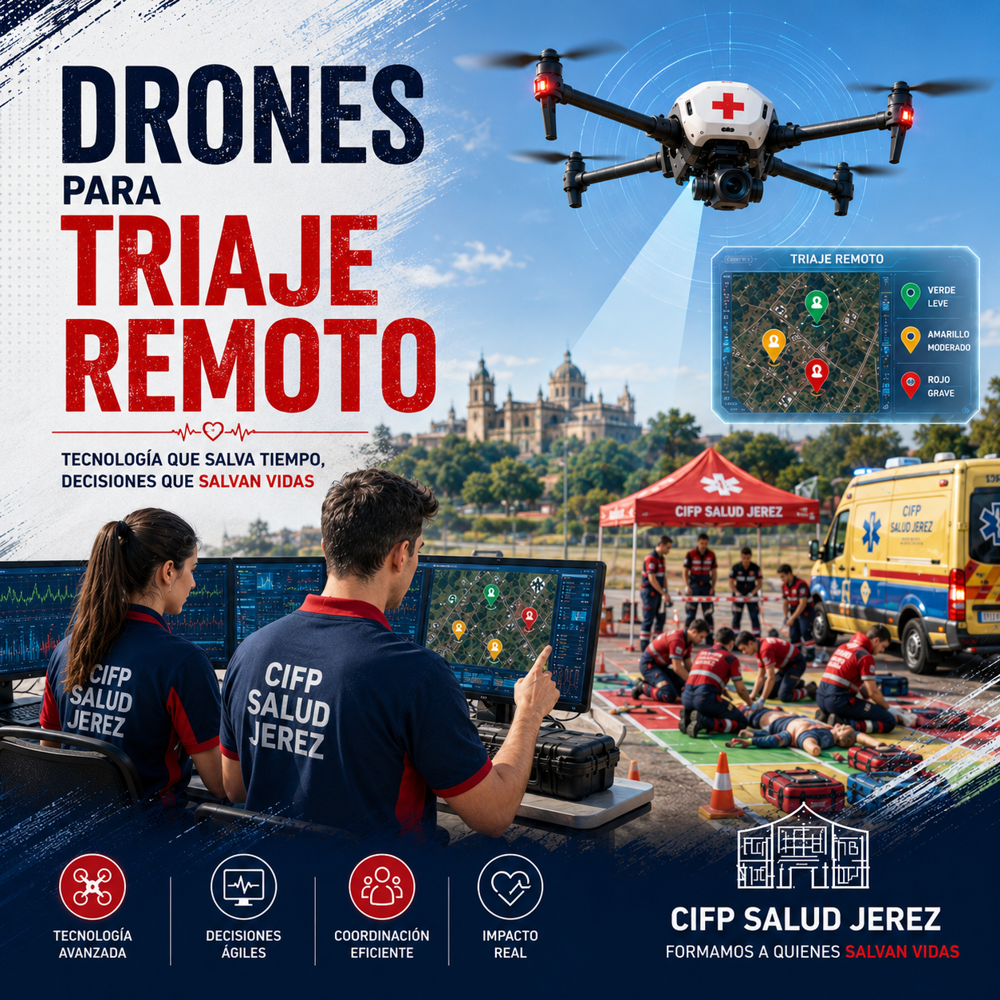
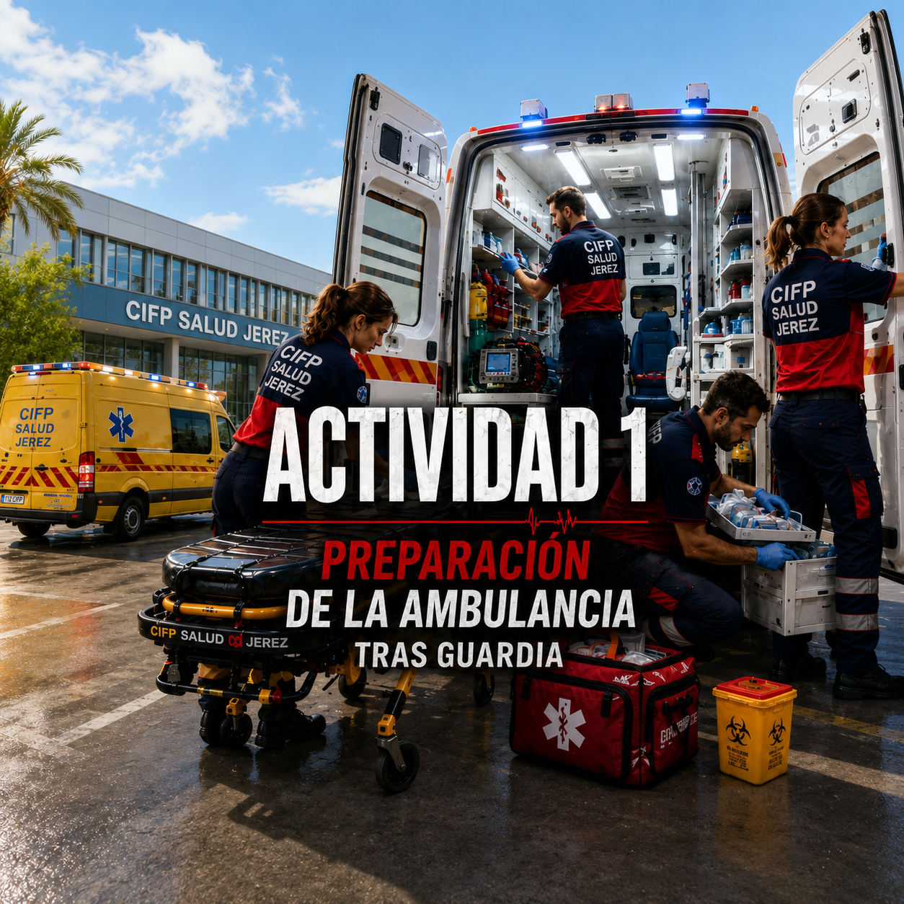
| Criterio | 4 – Excelente | 2 – Básico |
|---|---|---|
| Identificación de riesgos | Detecta todos, fundamenta impacto clínico | Detecta algunos sin justificación |
| Priorización clínica | Argumenta con fundamento técnico sólido | Justificación limitada, poco fundamentada |
| Trabajo en equipo | Excelente comunicación y liderazgo colaborativo | Participación irregular, sin coordinación |
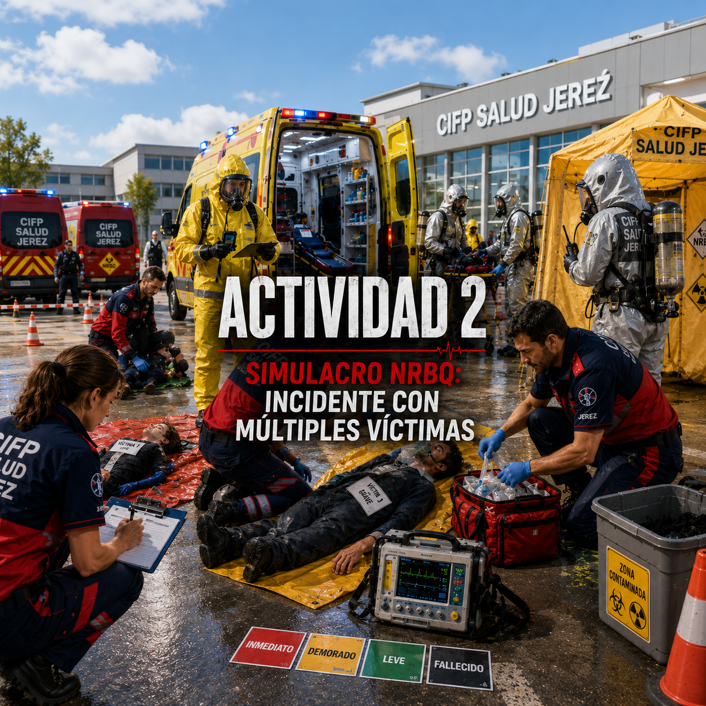
| Criterio | 4 – Excelente | 2 – Básico |
|---|---|---|
| Activación protocolo NRBQ | Activa en <2 min, comunica correctamente al coordinador | Activa con errores relevantes o sin comunicar |
| Colocación EPIs nivel alto | Coloca en orden correcto sin ayuda | Errores en orden o ajuste de algún EPI |
| Triage START/SALT | Clasifica correctamente todas las víctimas | Clasifica la mitad con justificación limitada |
| Concepto | Centro CIFP | Empresa Base 061 |
|---|---|---|
| Módulo 0056 total | 164h (teórica + taller) | 60h empresa |
| CE innovadores | 18h teoría + 6h taller | 26h empresa |
| Período principal | Sep 2025 – Jun 2026 | Oct 2025 – Mar 2026 |
| Jornada | Sesiones 2h/módulo | 2–3 días/semana alternancia |
9 semanas de estancia en alternancia. Concentración de CE innovadores en el 2º trimestre (enero–marzo 2026).
| Sem. | Período | CE | H. | Actividad principal en empresa |
|---|---|---|---|---|
| 1–3 | Oct–Nov 2025 | CE 4b | 12h | Protocolos bioseguridad SVB/SVA. Revisión EPIs y lavado/descontaminación vehículo |
| 4–6 | Ene–Feb 2026 | CE 4b | 12h | Descontaminación supervisada tras intervención de riesgo infeccioso. Trajes NRBQ nivel B/C |
| 7–8 | Feb–Mar 2026 | CE 3d | 8h | Simulacro NRBQ con Protección Civil. Dosímetros electrónicos reales. Triage incidente radiológico |
| 9 | Mar 2026 | 3d+4b | 6h | Simulacro integrado IMV NRBQ/biológico. Evaluación por tutor/a laboral |
| TOTAL CE innovadores | 38h | 22h restantes: RA1, RA2, RA5, RA6 | ||
| RA | En el CIFP Salud Jerez | En la Base 061 EPES |
|---|---|---|
| RA1 | Material, técnicas vía aérea, hemostasia y ECG con maniquíes | Técnicas SVA reales, monitor-desfibrilador, ePCR en servicio |
| RA2 | Cálculo dosis, farmacología con casos clínicos simulados | Observación preparación y administración fármacos UVI móvil |
| RA3 | Biomecánica trauma, fundamentos CE 3d, simulacro NRBQ | Dosímetros reales, triage incidente radiológico, Protección Civil |
| RA4 | Agentes biológicos/químicos, EPIs básicos, protocolos OMS/ECDC | EPIs nivel alto reales, descontaminación ambulancias riesgo infeccioso |
| RA5 | Patología cardiovascular, respiratoria y neurológica urgente | Intervenciones SVA reales, sistema SIGEA, telemedicina prehospitalaria |
| RA6 | Parto inminente con simulador obstétrico y maniquí neonatal | Observación traslados obstétricos urgentes bajo supervisión SVA |
El centro construye las bases conceptuales mediante simulación controlada; la empresa las consolida y transfiere al contexto profesional real. Este diseño en continuidad distingue un modelo dual de calidad de una simple suma de horas.
Rúbrica conjunta Centro–Empresa: instrumento común que delimita qué se evalúa, quién evalúa y qué nivel de desempeño se espera.
Al finalizar el período en la Base 061. Cada alumno/a completa individualmente en Moodle. Contribuye con un 5% a la nota final.
| Dimensión | Pregunta de reflexión | Val. |
|---|---|---|
| Competencia técnica | ¿En qué medida he consolidado las técnicas SVA trabajadas en empresa? | 1–4 |
| CE innovadores | ¿Me siento seguro/a aplicando el protocolo NRBQ y medidas de bioseguridad? | 1–4 |
| Trabajo en equipo | ¿He contribuido activamente al equipo durante los servicios y simulacros? | 1–4 |
| Adaptabilidad | ¿He sido capaz de adaptarme a situaciones imprevistas en empresa? | 1–4 |
| Gestión del tiempo | ¿He gestionado bien el tiempo y la organización del material? | 1–4 |
| Cuaderno prácticas | ¿He mantenido el cuaderno actualizado con registros completos y reflexivos? | 1–4 |
| Aprendizaje global | ¿Qué es lo más valioso que me llevo de este período en empresa? | Abierta |
| Propuesta mejora | ¿Qué cambiaría del modelo dual para la próxima promoción? | Abierta |
Al finalizar cada una de las dos actividades. Cada alumno/a evalúa a un compañero de equipo. Contribuye con un 5% a la nota final.
Desarrollan metacognición y autorregulación — competencias esenciales en el TES, donde la revisión crítica post-servicio es práctica profesional inherente.
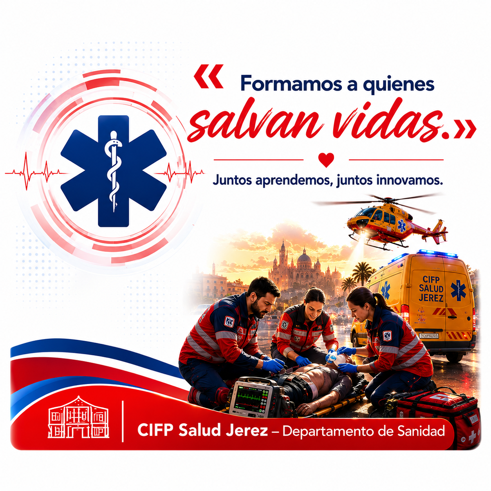
La sostenibilidad del modelo dual depende del nivel de motivación, actualización y cohesión del equipo docente del Departamento de Sanidad. Un profesorado implicado, con sentido de proyecto y recursos para actualizarse, es condición indispensable para que el alumnado reciba formación de calidad.
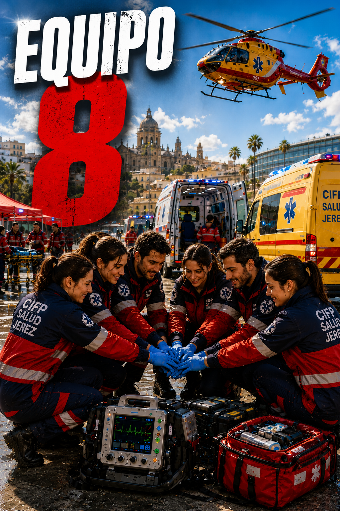